SEM_Alim <- SEM %>% filter(GT == "Alim 3,14")
SEM_Alim <- ALIM %>% filter(Organo == "Semilla")
SEM_Alim <- ALIM_VyS %>% filter(Organo == "Semilla")
SEM_Alim <- ALIM_VyS %>% filter(Organo != "Vaina") # signo diferente aUnidad 3. Análisis y representación de datos categóricos
ANOVA a 1 factor
Ahora vamos a trabajar con los datos con variables categóricas. Cuando incorporamos un factor con diferentes niveles y nos interesa comparar si hay diferencias entre los efectos de los distintos niveles de uno o más factores uno de los análisis más utilizados es el análisis de la varianza. Comenzaremos con el caso de un único factor.
Este análisis plantea la comparación de medias muestrales a partir de la varianza que presentan los datos dentro de cada grupo (de allí su nombre). Al igual que el modelo de regresión, presenta supuestos a cumplirse (normalidad de la variable y homogeneidad de las varianzas).
El planteo del modelo en R será de la misma manera que la regresión, ya que se trata de otro modelo lineal. En nuestro ejemplo trabajaremos evaluando el efecto del estrés térmico (inicialmente) en el peso seco de semillas de la variedad Alim 3,14. Para ello armaremos la base de datos (doy como ejemplo algunas formas de armarla en base a las que ya tenemos):
Y ahora sí corremos el modelo y ponemos a prueba los supuestos de igual manera que hiciéramos anteriormente:
fit3 <-lm(PS ~ ET, data = SEM_Alim)
# Gráfico de supuestos
layout(matrix(1:4, 2, 2)); plot(fit3) ;layout(1)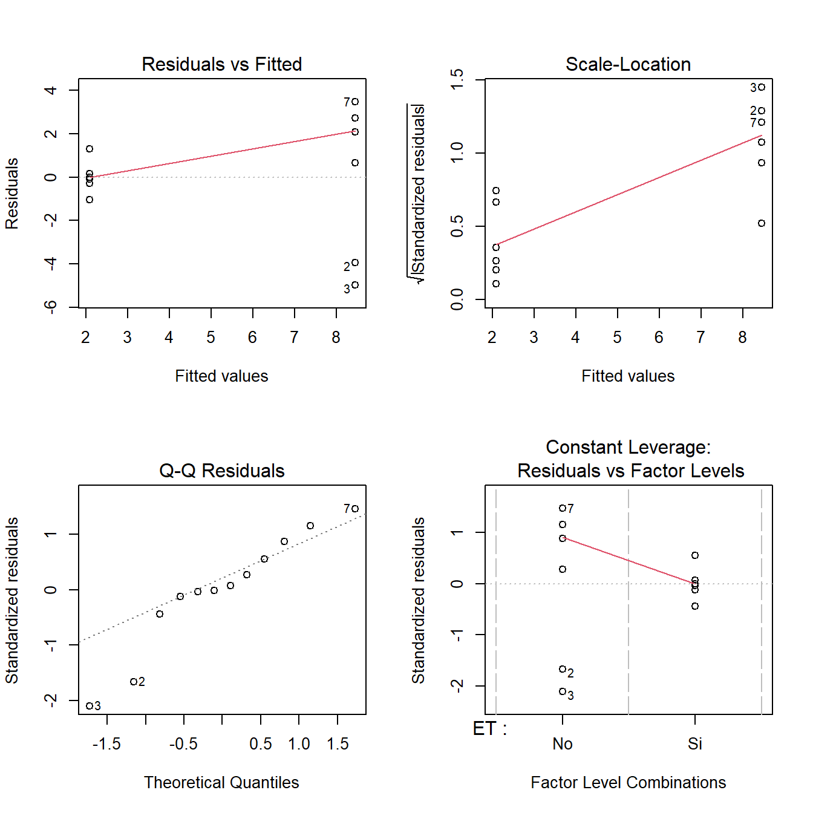
shapiro.test(resid(fit3))
Shapiro-Wilk normality test
data: resid(fit3)
W = 0.92632, p-value = 0.3428bartlett.test(resid(fit3)~SEM_Alim$ET) # no hay homogeneidad
Bartlett test of homogeneity of variances
data: resid(fit3) by SEM_Alim$ET
Bartlett's K-squared = 8.139, df = 1, p-value = 0.004332Como vemos hay normalidad de errores pero no homogeneidad de varianza. Si bien esto pudiera no ser un problema muy grande (el modelo sobreestimará la varianza general y tendrá menos potencia), podemos transformar la variable respuesta:
# Probamos transformando por el logaritmo
fit3 <-lm(log(PS) ~ ET, data = SEM_Alim)
layout(matrix(1:4, 2, 2)); plot(fit3) ;layout(1)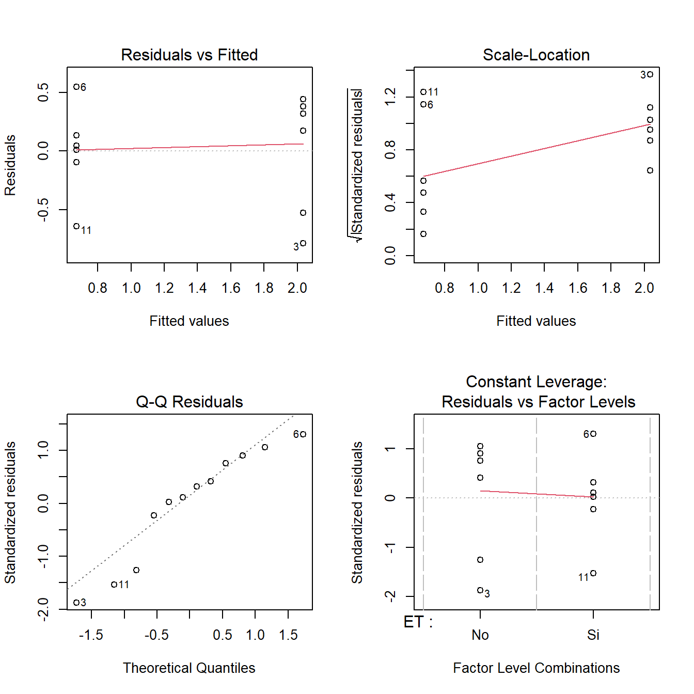
shapiro.test(resid(fit3))
Shapiro-Wilk normality test
data: resid(fit3)
W = 0.91186, p-value = 0.2254bartlett.test(resid(fit3)~SEM_Alim$ET)
Bartlett test of homogeneity of variances
data: resid(fit3) by SEM_Alim$ET
Bartlett's K-squared = 0.41623, df = 1, p-value = 0.5188boxplot(residuals(fit3,type="pearson")~SEM_Alim$ET,
ylab="Pearson standarized residuals")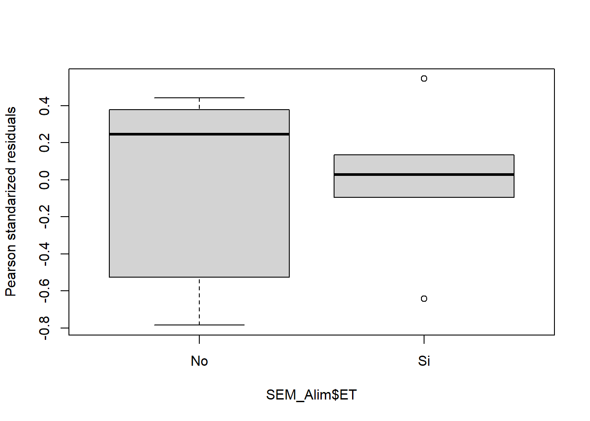
# ahora sí se cumpleEntonces ahora que ya sabemos de la validez del modelo, pediremos la tabla del ANOVA para ver si existen o no diferencias significativas:
anova(fit3)Analysis of Variance Table
Response: log(PS)
Df Sum Sq Mean Sq F value Pr(>F)
ET 1 5.5709 5.5709 26.502 0.0004327 ***
Residuals 10 2.1020 0.2102
---
Signif. codes: 0 '***' 0.001 '**' 0.01 '*' 0.05 '.' 0.1 ' ' 1Vemos que arroja un p mucho menor a 0,05, por lo que diremos que al menos una media es diferente de las otras (como en este caso son dos niveles, una de la otra). Para saber cuál es diferente de cuál, como test a posteriori podemos correr el test de Tukey. Para ello utilizamos la función HSD.test del paquete agricolae:
# Tukey
tukey1 <- HSD.test(fit3,"ET")
tukey1$groups log(PS) groups
No 2.0346143 a
Si 0.6719101 bVemos que sin estrés térmico las semillas tenían mayor peso seco.
ANOVA bifactorial
Para correr un modelo de ANOVA con 2 factores diferentes y evaluar su interacción debemos poner ambas variables separadas por *. Analizaremos el mismo modelo de antes pero incorporando además el efecto del CO2 atmosférico:
SEM_Alim$CO2 <- as.factor(SEM_Alim$CO2) # convertimos a factor
fit4 <-lm(PS ~ ET*CO2, data = SEM_Alim)De la misma manera que antes, probamos los supuestos:
# Gráfico de supuestos
layout(matrix(1:4, 2, 2)); plot(fit4) ;layout(1)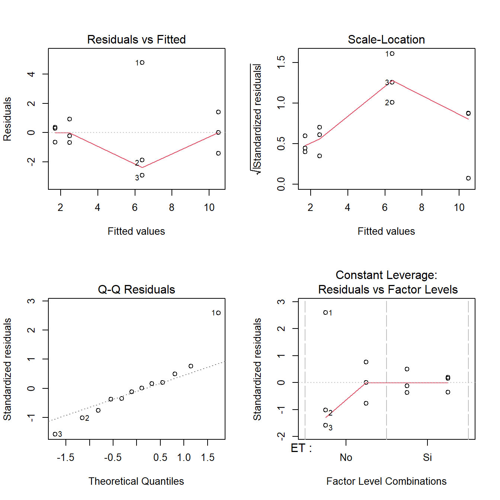
# la homogeneidad se prueba para cada factor
bartlett.test(resid(fit4)~SEM_Alim$ET)
bartlett.test(resid(fit4)~SEM_Alim$CO2)
boxplot(residuals(fit4,type="pearson")~SEM_Alim$ET,
ylab="Pearson standarized residuals")
boxplot(residuals(fit4,type="pearson")~SEM_Alim$CO2,
ylab="Pearson standarized residuals")
Bartlett test of homogeneity of variances
data: resid(fit4) by SEM_Alim$ET
Bartlett's K-squared = 7.6109, df = 1, p-value = 0.005802
Bartlett test of homogeneity of variances
data: resid(fit4) by SEM_Alim$CO2
Bartlett's K-squared = 4.1568, df = 1, p-value = 0.04147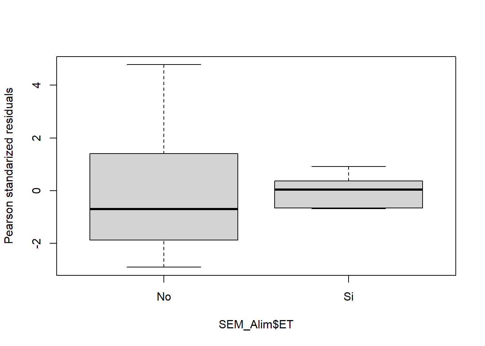
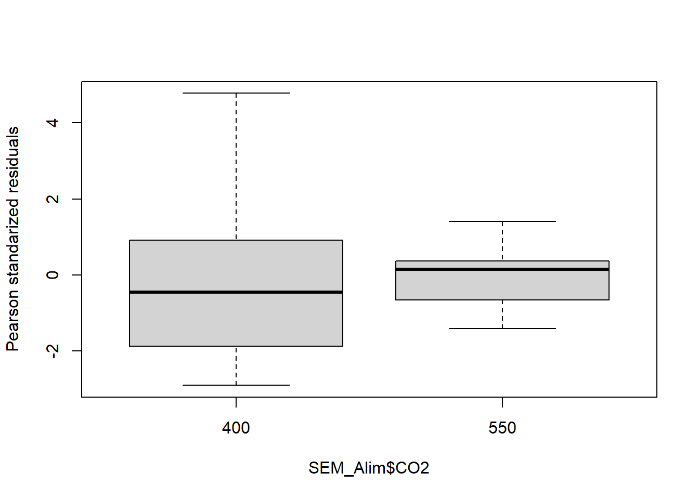
Una vez comprobados los supuestos, para ver los resultados debemos ejecutar el comando anova. También podemos ejecutar el summary, que nos permitirá ver contrastes con respecto al primer nivel del factor:
# Tablas
anova(fit4)Analysis of Variance Table
Response: PS
Df Sum Sq Mean Sq F value Pr(>F)
ET 1 121.73 121.731 23.9217 0.001207 **
CO2 1 8.30 8.300 1.6311 0.237373
ET:CO2 1 17.91 17.910 3.5195 0.097500 .
Residuals 8 40.71 5.089
---
Signif. codes: 0 '***' 0.001 '**' 0.01 '*' 0.05 '.' 0.1 ' ' 1summary(fit4)
Call:
lm(formula = PS ~ ET * CO2, data = SEM_Alim)
Residuals:
Min 1Q Median 3Q Max
-2.9033 -0.8675 -0.1083 0.5008 4.7767
Coefficients:
Estimate Std. Error t value Pr(>|t|)
(Intercept) 6.393 1.302 4.909 0.00118 **
ETSi -3.927 1.842 -2.132 0.06560 .
CO2550 4.107 1.842 2.230 0.05633 .
ETSi:CO2550 -4.887 2.605 -1.876 0.09750 .
---
Signif. codes: 0 '***' 0.001 '**' 0.01 '*' 0.05 '.' 0.1 ' ' 1
Residual standard error: 2.256 on 8 degrees of freedom
Multiple R-squared: 0.7842, Adjusted R-squared: 0.7033
F-statistic: 9.691 on 3 and 8 DF, p-value: 0.004853Vemos que el resultado del ANOVA es significativo únicamente para el factor ET, por lo que el modelo correcto sería el unifactorial. Sin embargo mostraremos los test a posteriori para el caso bifactorial:
tukey1 <- HSD.test(fit4,"ET")
tukey1$groups PS groups
No 8.446667 a
Si 2.076667 btukey2 <- HSD.test(fit4,"CO2")
tukey2$groups PS groups
550 6.093333 a
400 4.430000 atukey3 <- HSD.test(fit4,c("ET","CO2"))
tukey3$groups PS groups
No:550 10.500000 a
No:400 6.393333 ab
Si:400 2.466667 b
Si:550 1.686667 bActividad 4
Realice un ANOVA bifactorial con los factores ET y CO2 pero para el peso seco de semillas de los cultivares ES Mentor y Sigalia. ¿Se observa la misma respuesta que para el cultivar Alim 3,14?
Gráficos de barras
Nuevamente, veremos varias formas de hacerlos empleando tanto sciplot como ggplot2.
bargraph.CI (sciplot)
Al igual que para los gráficos de puntos, el paquete sciplot nos brinda una función para realizar rápidamente un gráfico de barras, sin necesidad de ejecutar ningún cálculo previo. Por ejemplo:
bargraph.CI(x.factor = ET, response = PS, group = CO2,
ylim = c(0,12), legend = T,
data = SEM_Alim, col= c("honeydew","honeydew4"),
las=1, xlab="Estrés térmico",
ylab= "Peso seco",
cex.axis=0.8);abline(h=0)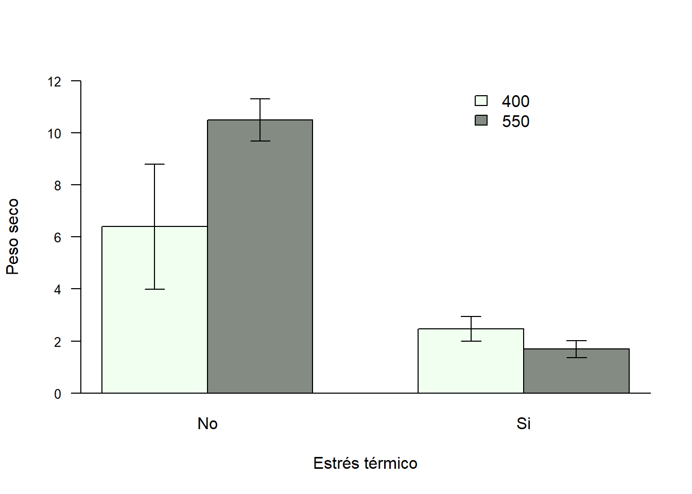
Los parámetros a modificar son los mismos que vimos anteriormente para los gráficos de puntos.
geom_col (ggplot2)
Ggplot2 nos ofrece dos geoms para hacer gráficos de barras (geom_col y geom_bar). Utilizaremos en este taller únicamente geom_col.
Un inconveniente al realizar estos gráficos, es que por defecto el geom no nos calcula la media y los desvíos de la variable a graficar, sino que nos representa directamente los datos que le demos. Sin embargo, una de las principales virtudes de ggplot y del entorno tidyverse es la posibilidad realizar todos los cambios que creamos convenientes a nuestro database y luego graficar la base modificada sin necesidad de haber creado explícitamente un objeto nuevo. ¿Qué ventaja presenta esto? Nos permite manipular fácilmente la base de datos sin crear una lista muy larga de objetos que luego se nos complique identificar cuál es cuál. Así, a modo de ejemplo,
Entonces, para realizar el mismo gráfico que hicimos con bargraph.CI, debemos calcular la media y el error estándar de la variable PS de semillas:
SEM_Alim %>% select(CO2, ET, PS) %>% # seleccionamos las columnas involucradas
group_by(CO2, ET) %>% # definimos criterios de agrupamiento
summarise_all(list(mean,se)) # pedimos media y error estándar# A tibble: 4 × 4
# Groups: CO2 [2]
CO2 ET fn1 fn2
<fct> <chr> <dbl> <dbl>
1 400 No 6.39 2.41
2 400 Si 2.47 0.476
3 550 No 10.5 0.811
4 550 Si 1.69 0.329Vemos que incorpora las columnas fn1 (que tiene los valores de las medias) y fn2 (con los errores estándares). A estos comandos creados se les anexa el gráfico:
SEM_Alim %>% select(CO2, ET, PS) %>%
group_by(CO2, ET) %>%
summarise_all(list(mean,se)) %>%
ggplot(aes(ET, fn1,
fill=CO2))+ # en este caso el parámetro de color lo define fill
geom_col()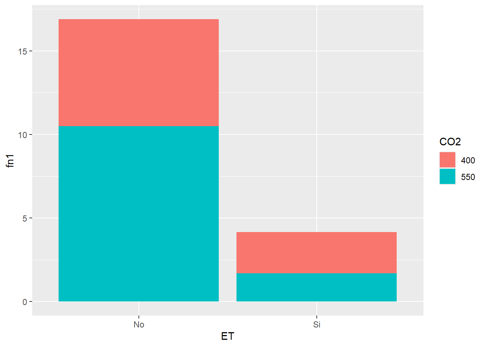
Como vemos, la barras se apilan. Para que vaya una al lado de la otra, debemos cambiar el parámetro position= “dodge” dentro del geom (por defecto está en identity). Además agregaremos las barras de error:
G3 <- SEM_Alim %>% select(CO2, ET, PS) %>%
group_by(CO2, ET) %>%
summarise_all(list(mean,se)) %>%
ggplot(aes(ET, fn1, fill=CO2))+
geom_col(position = "dodge") +
geom_errorbar(aes(ymin=fn1-fn2, ymax=fn1+fn2), width=.1,
position = position_dodge(.9))
G3Una alternativa para no tener que realizar manualmente la transformación de la base de datos cuando queremos graficar medias y desvíos es usar stat_summary. Esta función tiene una nomenclatura algo distinta a las otras y permite especificar diferentes geoms. Veamos para realizar el último gráfico:
ggplot(SEM_Alim, aes(ET, PS, fill=CO2))+
stat_summary(fun=mean, geom="col",
position = position_dodge(0.9)) +
stat_summary(fun.data=mean_se, geom ='errorbar', width=0.2,
position = position_dodge(0.9))Sin embargo, si queremos agregar las letras del Tukey realizado, será más adecuado hacerlo con el cálculo previo de medias y error estándar. Esto es así ya que nos permite ubicar adecuadamente las letras en la altura correspondiente a cada columna. Las letras las incorporaremos de forma manual con un nuevo geom, el geom_text:
G3 + geom_text(aes(y = fn1 + fn2,
label= c("ab", "b", "a", "b")),
position=position_dodge(0.9),
vjust=-.5) # ajuste vertical de la posición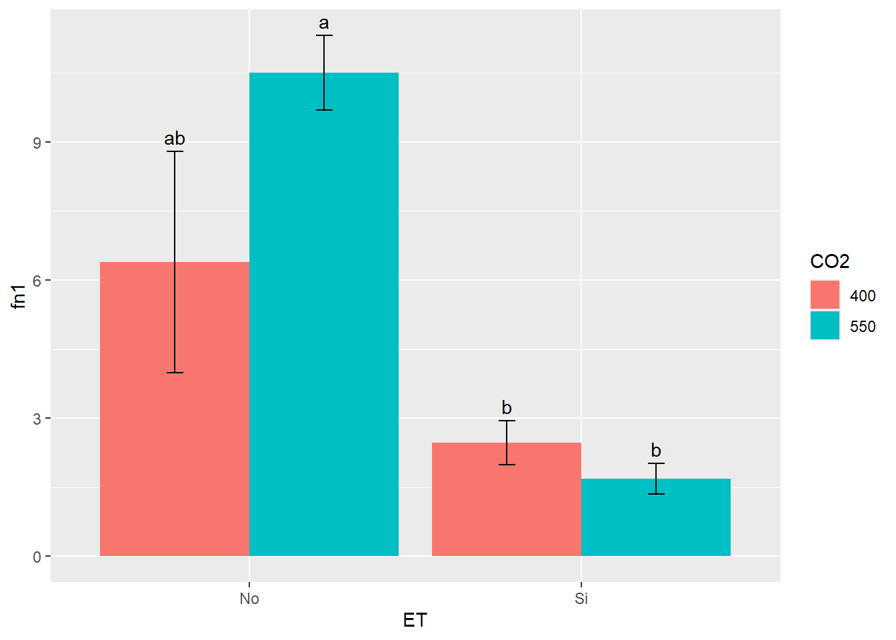
Gráfico de barras apiladas y apilado porcentual
Veremos ahora cómo realizar un gráfico de barras apilado y un apilado porcentual. Supongamos como ejemplo que queremos graficar el peso seco de los órganos evaluados en plantas de soja de la variedad Alim 3,14. Para ello, lo primero que debemos hacer es “ordenar” los niveles del factor como los queramos mostrar. En nuestro caso, iremos de abajo hacia arriba de la planta:
ALIM$Organo <- factor(ALIM$Organo,
levels = c("Tallo","Hoja","Vaina","Semilla")) Una vez hecho esto, vamos a transformar nuestra base de datos utilizando la función ddplydel paquete plyr. Esta función tiene un uso particular que excede el contenido de este curso, veremos simplemente cómo utilizarla con el ejemplo:
library(plyr)
ALIM_apilado <- ALIM %>% select(Organo, ET, PS) %>%
group_by(ET, Organo) %>%
summarise_all(funs(mean,se)) %>%
ddply(c("ET"), transform,
percent_PS = mean/ sum(mean) * 100) %>%
ddply(c("ET"), transform, label_y=cumsum(mean)) %>%
ddply(c("ET"), transform, label_y_perc=cumsum(percent_PS)) %>%
mutate(Organo=factor(Organo,
levels=c("Semilla", "Vaina",
"Hoja", "Tallo")))
# notar que volvemos a invertir el orden | ET | Organo | mean | se | percent_PS | label_y | label_y_perc |
|---|---|---|---|---|---|---|
| No | Tallo | 4.680000 | 0.5586889 | 17.18587 | 4.68000 | 17.18587 |
| No | Hoja | 9.740000 | 0.9862048 | 35.76718 | 14.42000 | 52.95306 |
| No | Vaina | 4.365000 | 0.7491584 | 16.02913 | 18.78500 | 68.98219 |
| No | Semilla | 8.446667 | 1.4605996 | 31.01781 | 27.23167 | 100.00000 |
Como se puede ver, además de calcular media y error estándar, se crearon las variables label_y (que nos da el acumulado parcial, nos servirá como posición para poner una etiqueta) y label_y_perc para el acumulado porcentual. Ahora podemos ejecutar los gráficos y agregar además el valor de cada columna apilada:
G4 <- ALIM_apilado %>%
ggplot(aes(ET, mean, fill=Organo))+
geom_col() +
geom_text(aes(label=round(mean, 2), # agregamos el valor
y = label_y)) # indica la posición
G4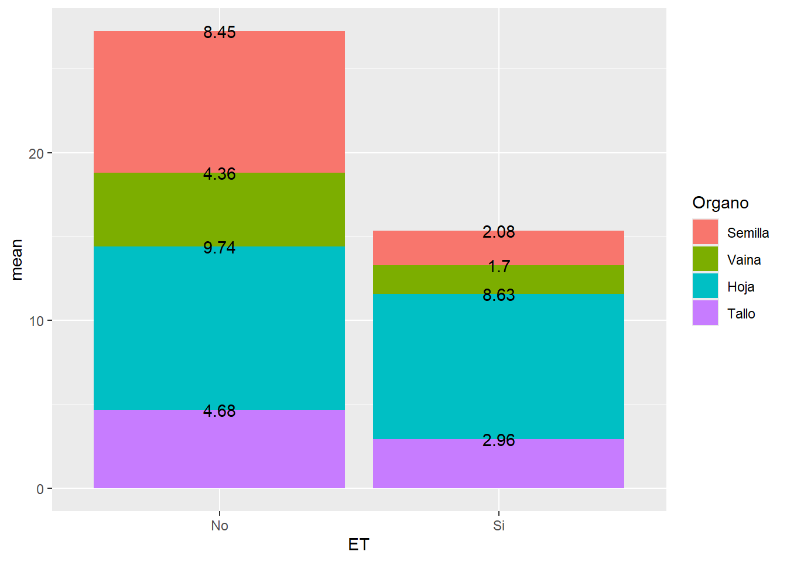
G5 <- ALIM_apilado %>%
ggplot(aes(ET, percent_PS, fill=Organo))+
geom_col() +
geom_text(aes(label=round(percent_PS, 2), y = label_y_perc), vjust=2)
G5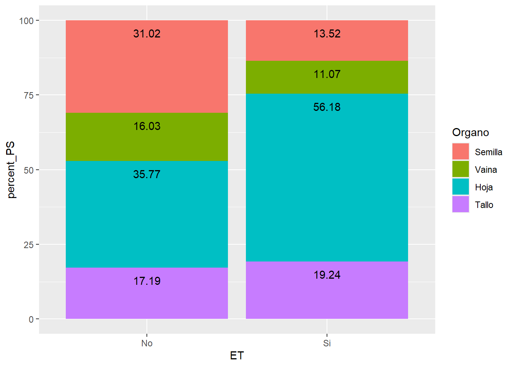
Boxplot
Los gráficos tipo boxplot también son formas frecuentes de presentar variables numéricas con distintos factores de clasificación. Veremos algunas formas de hacerlo.
Función boxplot
La función derivada de plot para hacer gráficos de barras es boxplot. Se utiliza de forma similar a los gráficos ya vistos:
boxplot(PS~ET, data = SEM_Alim,
ylim = c(0,12),
xlab="Estrés térmico",
ylab= "Peso seco",
las=1, cex.axis=0.8)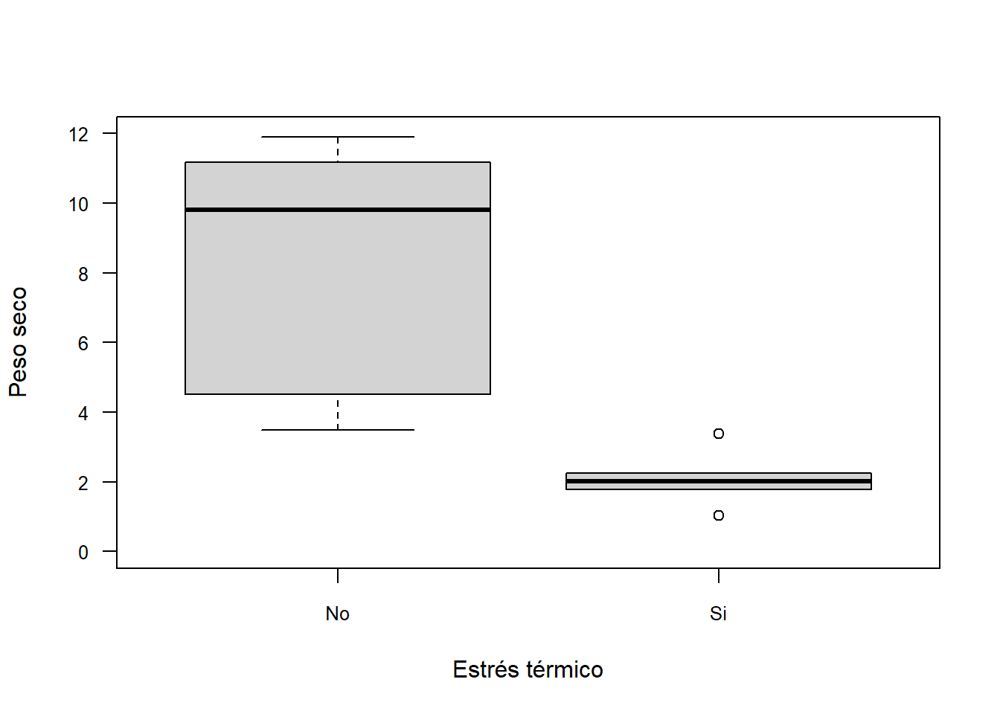
geom_boxplot
El paquete ggplot2 nos ofrece una vez maś una forma muy versátil de crear gráficos de cajas. La función en cuestión es geom_boxplot que, a diferencias de geom_col, no requiere que realicemos ningún cálculo previo. De esta manera podemos generar un gráfico con un par de líneas de código:
ggplot(SEM_Alim, aes(ET, PS))+
geom_boxplot()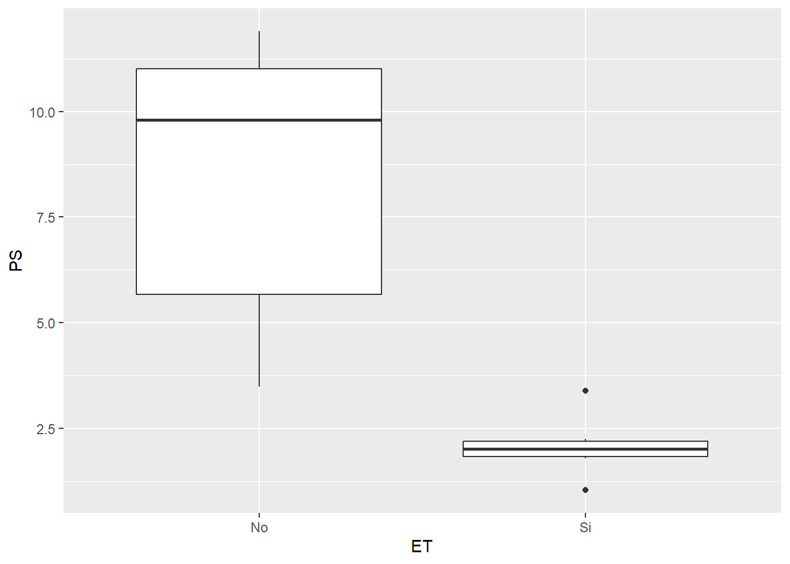
Si vemos con atención a este gráfico le faltan una serie de cosas que podrían mejorarlo. Por un lado, los extremos de los cuartiles no tienen la marca de final, sino que simplemente termina la línea. Sumado a esto, podría interesarnos agregar el valor de la media, que no figura en el gráfico. Veamos como incorporarlos con la función ya vista stat_summary:
ggplot(SEM_Alim, aes(ET, PS))+
stat_boxplot(geom ='errorbar', width=0.2)+ #debemos colocarlo primero para que quede al fondo
geom_boxplot() +
stat_summary(fun=mean, geom="point")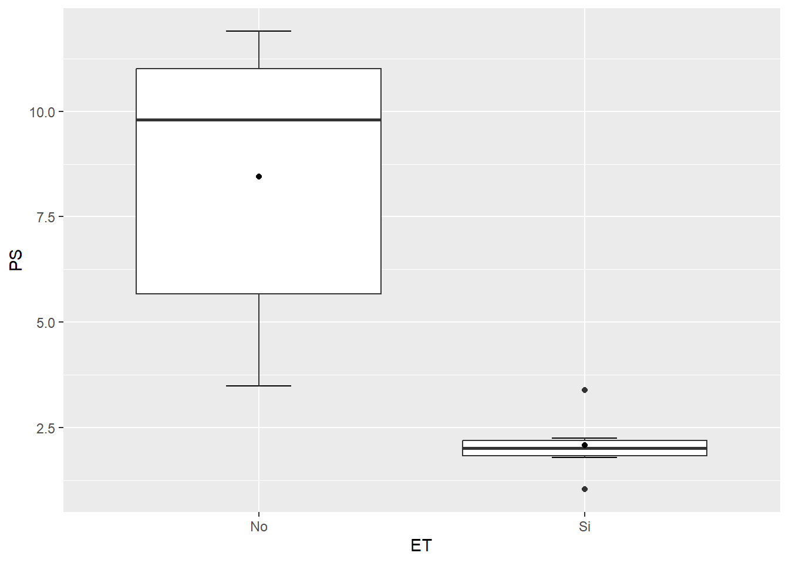
Actividad 5
Realice un gráfico de barras y un gráfico de cajas donde demuestre los resultados de los ANOVA realizados en la actividad 4.